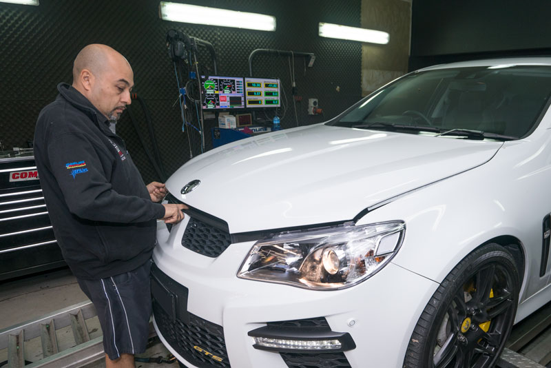

01 / Tuning
Dyno-Tuning
Real numbers. Verified gains.
We baseline your vehicle on our rolling road, then methodically refine the fuel injection and engine management settings before a follow-up run. The cycle repeats until we've drawn every fraction of clean power from your engine — verified, not estimated.
- Baseline and post-tune verification
- Custom fuel and ignition mapping
- Naturally aspirated and forced-induction tuning
- Detailed dyno graph supplied